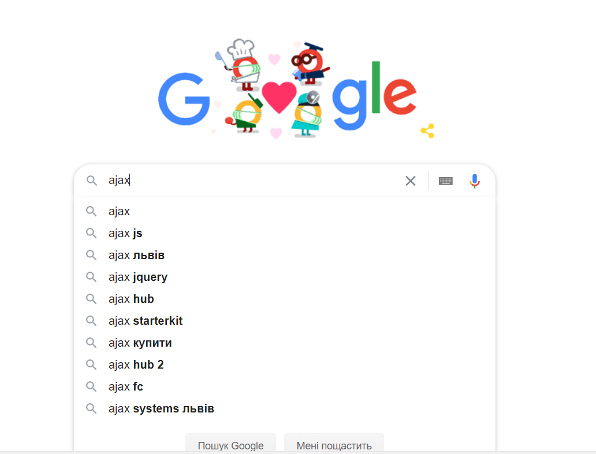
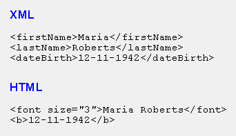

AJAX
class: center, middle .title[ Front-end training # AJAX ] --- # What is JavaScript? ***JavaScript*** is a single threaded, non-blocking, asynchronous, concurrent language. The browser engine executes JavaScript in a single thread. It means it runs one thing at the time, all events are processed sequentially. --- # Concurrency in JavaScript JavaScript has a concurrency model based on an event loop, which is responsible for executing the code, collecting and processing events, and executing queued sub-tasks. <img src="assets/event-loop.png" title="Event loop example" style="height: 550px;"> --- ## Call stack Call stack is responsible for running things.  --- # AJAX ***Asynchronous Javascript And XML*** Is a technique for creating dynamic web pages. Provides a possibility to retrieve data without reloading the page thus making the page interactive <div style="height: 395px;overflow: hidden;"></div> --- # XML vs Html Extensible Markup Language  --- ***How to implement this?*** - XMLHttpRequest - fetch API - Websocket ***Data formats*** - JSON (JavaScript Object Notation) - XML - HTML/text - binary data --- Request- response pattern  --- # HTTP methods and status codes HTTP Methods: - ***GET*** - Get some record from server - ***POST*** - Add a new record to server - ***PATCH*** - Modify existing record on server - ***PUT*** - Update existing record on server - ***DELETE*** - Remove existing record from server HTTP Status Codes: - ***1xx: Informational*** - Communicates transfer protocol-level information. - ***2xx: Success*** - Indicates that the client’s request was accepted successfully. - ***3xx: Redirection*** - Indicates that the client must take some additional action in order to complete their request. - ***4xx: Client Error*** - This category of error indicatetes client errors. - ***5xx: Server Error*** - This category of error indicatetes server errors. --- #XMLHttpRequest ***XMLHttpRequest*** is a built-in browser object that allows to make HTTP requests in JavaScript. XMLHttpRequest has two modes of operation: synchronous and asynchronous. Example: ```javascript const xhr = new XMLHttpRequest(); // 1. Create a new XMLHttpRequest object xhr.open('GET', '/article/xmlhttprequest/example/load'); // 2. Configure it xhr.send(); // 3. Send the request over the network // 4. This will be called after the response is received xhr.onload = function() { if (xhr.status != 200) { // analyze HTTP status of the response alert(`Error ${xhr.status}: ${xhr.statusText}`); // e.g. 404: Not Found } else { // show the result alert(`Done, got ${xhr.response}`); // get the server response } }; xhr.onerror = function() { alert("Request failed"); };``` --- # Fetch A new modern way to make HTTP calls. Syntax: ```javascript const promise = fetch(url, {options}) ``` - url – the URL to access. - options - optional parameters: method, headers etc. Withoult options a simple GET request will be made The promise rejects if the fetch was unable to make HTTP-request, e.g. network problems, or there’s no such site. Abnormal HTTP-statuses, such as 404 or 500 do not cause an error. We can see HTTP-status in response properties: - status – HTTP status code, e.g. 200. - ok – boolean, true if the HTTP status code is 200-299. --- ***Example:*** ```javascript const response = await fetch(url); if (response.ok) { // if HTTP-status is 200-299 const json = await response.json(); // get the response body } else { alert("HTTP-Error: " + response.status); } ``` To get the response body, we need to use an additional method call. - response.text() – read the response and return as text, - response.json() – parse the response as JSON By default response.body is a ReadableStream object, it allows you to read the body chunk-by-chunk --- # Fetch POST requests To make a POST request, or a request with another method, we need to pass configuration object with: ***method*** – HTTP-method, e.g. POST ***body*** – the request body, one of: - a string (e.g. JSON-encoded), - FormData object, to submit the data as form/multipart, - Blob/BufferSource to send binary data, - URLSearchParams, to submit the data in x-www-form-urlencoded encoding, rarely used. The JSON format is used most of the time. --- # Fetch POST request example ```javascript const user = { name: 'John', surname: 'Smith' }; const response = await fetch('/article/fetch/post/user', { method: 'POST', headers: { 'Content-Type': 'application/json;charset=utf-8' }, body: JSON.stringify(user) }); const result = await response.json(); alert(result.message); ``` --- class: center, middle ##That's All Folks ##Thank you for your attention!